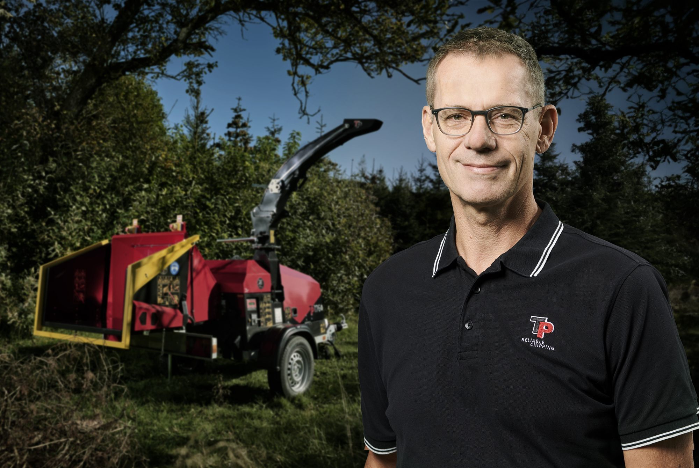

Electrification of machinery is a hot topic. Requirements are tightening, ambitions are rising, and expectations for emission-free solutions are spreading across industries. But it hasn't always been this way. For Linddana, the journey toward electric woodchippers began long before the market was truly ready, and long before there were clear answers to what the technology would look like in practice.
In 2018, Linddana made a strategic decision: to explore what electrification could become for their products. Not because customers were lining up and demanding it, and not because regulations forced their hand, but because they could see where the industry was heading. They wanted to be first movers.
"We wanted to be first. We knew it would cost time and money, and that the market might not be ready yet."Hans Anker Holm, CEO, Linddana
Getting started before demand took off
So Hans and the rest of Linddana, who rank among Europe's major producers of woodchippers, rolled up their sleeves, put on their future-focused glasses, and filled their pockets with a healthy dose of risk appetite. The first step was to find a supplier for the battery system itself. And because this was still the early days, battery technology for this type of machinery was far from mature. In short, there were very few suppliers in Europe capable of delivering solutions at the scale and quality Linddana required.
"There weren't many options. We could have looked to China, but that didn't make sense for us. We don't produce thousands of units like a power drill, and we needed a partner who was at the same stage in the lifecycle as we were."Hans Anker Holm, Linddana
Electrifying Linddana's TP woodchippers therefore began with a series of fundamental questions: what does it take to replace a diesel engine with an electric motor, what level of power consumption is realistic, and how do you design a solution that actually works in practice for professional users?
Those were not questions Hans and Linddana could answer on their own, and it required a partner who understood both battery technology and the practical demands these machines face in real-world use. That partner turned out to be WS Technicals, who already had several years of experience translating battery know-how into practical solutions, including projects where volume was not necessarily the decisive factor.
So when Hans reached out with his initial questions, specifically on the 12th of August 2018, the response from WS Technicals was immediate and to the point: "Hans, thank you for your enquiry. What application will the battery be used for, and do you have an estimate of the power consumption?" And with that, an electric wood-chipping journey had begun.
Electrification is not black and white
One of the key principles in Linddana's approach has been the understanding that electrification does not necessarily have to be a complete transformation. Rather than rethinking the entire machine from the ground up, Linddana chose a more pragmatic path.
"In reality, we kept it as simple as possible. We took out the diesel engine and put in an electric motor. The rest of the machine remains the same."Hans Anker Holm, Linddana
This means customers are not faced with a completely new machine, unfamiliar workflows, or unpredictable behavior. The woodchipper works in the same way as before, just with a different drivetrain. It is a transitional solution that requires a less radical shift and makes electrification more accessible.
"It will become more differentiated. Electrification is part of the future, but not necessarily 100 percent of it."Hans Anker Holm, Linddana

Markets do not move at the same pace
It is a well-known fact that electrification is largely driven by local conditions. Not all markets move at the same pace, and demand is often shaped more by political decisions than by technology alone.
In countries such as the Netherlands, Norway, and Spain, Linddana sees a greater willingness to invest in electric woodchippers. Here, bans, incentives, and points awarded in public tenders actively drive demand. In other countries, including Denmark, the picture is less clear and, according to Hans, the interest has fluctuated over time.
"If there is no real motivation, customers often choose the cheaper solution. An electric machine is more expensive to purchase, and if it does not lead to more jobs or clear advantages, the investment can be difficult to justify."Hans Anker Holm, Linddana
Learning comes at a cost
But it is justifiable. Going electric means accepting that not everything works perfectly from day one. Being a first mover comes with its own set of challenges, and Linddana has invested significant resources in developing and testing electric solutions. Not all experiences have been frictionless.
"We've paid our tuition. There have been things that didn't work the way we had hoped. But that's part of the process."Hans Anker Holm, Linddana
At the same time, Hans is clear that the effort is worth it. He points out that electric solutions are fundamentally easier to live with in day-to-day operation. With fewer moving parts, maintenance requirements are lower and running costs are significantly reduced. The trade-off is that when something does go wrong, it cannot simply be fixed on the spot.
"That's why support is crucial. You need to know that help is available when something breaks down."Hans Anker Holm, Linddana
With the right support in place, electric machines are both reliable and safe. As Hans puts it, an electric machine does not require much to function properly, as long as it has power and the battery operates within the correct limits. And as he adds, as long as any issues are resolved, customers are generally willing to forgive.
From novelty to maturity
In the years around 2020–2022, Linddana experienced a significant surge of interest in electric woodchippers. Many customers wanted to ride the electric wave, and the interest was not driven solely by municipalities or regulatory requirements, but also by individuals and companies with a clear green ambition.
After the pandemic, the picture changed. Demand became more subdued, and investment decisions more rational. Today, an electric solution has to offer more than novelty alone, it has to make sense in everyday operation. That said, Linddana now stands in a very different place than it did in 2018. Technology has matured, experience has been built, and the company has a much clearer understanding of where electrification creates real value, and where it does not.
"We have the technology in place today. And we understand far better what it takes to make it work in practice."Hans Anker Holm, Linddana
Leading the way, even when the road is uneven
Linddana's journey with electric woodchippers is not a story of quick wins or a frictionless transition. It is the story of making an early strategic choice, accepting uncertainty, and moving forward through experience. Being a first mover is not just about being first to market. It is about being willing to learn, adapt, and grow wiser, even when the market hesitates.
"Electrification is coming. But it will not arrive in one single form, or at the same pace everywhere. For us, the most important thing has been to be ready."Hans Anker Holm, Linddana